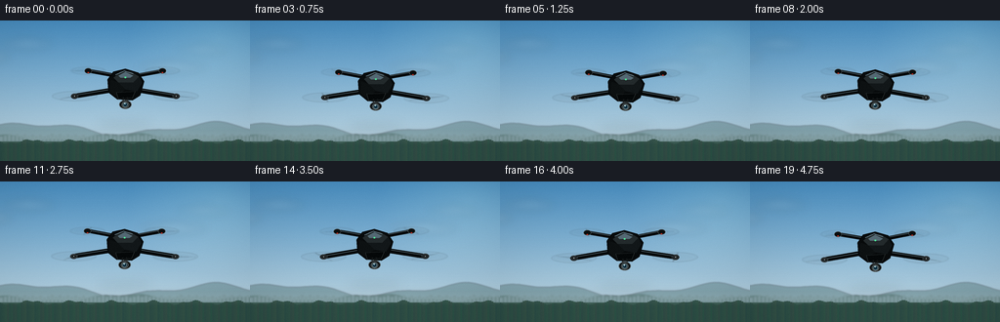
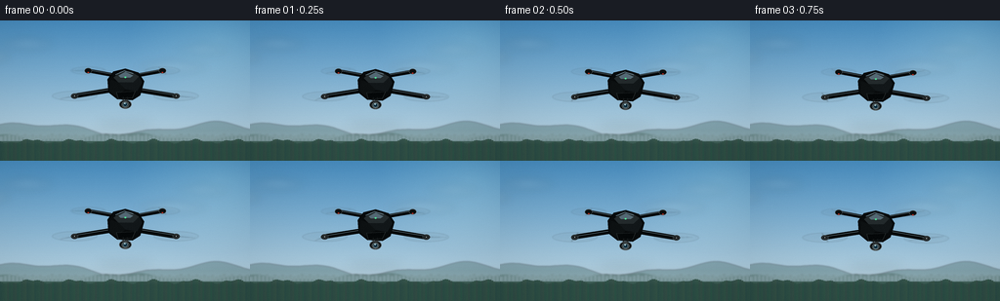

CODING AGENTS AS PIXEL WORLD MODELS
traex/GPT-5.6-Sol · instance_preservation_0041
点击播放 · 原生 RGB 像素
逐轮保存的候选
回放视频、检查图与代码变化。
每份候选均可单独播放。实际图片检查记录在下方工具轨迹中。
候选 01播放与检查图
点击播放 · 原生 RGB 像素


展开代码变化
--- 上一保存版本
+++ 本次保存版本
@@ -0,0 +1,203 @@
+from pathlib import Path
+import json, math
+import numpy as np
+from PIL import Image, ImageDraw, ImageFilter
+import artifact_io
+
+CASE_DIR = Path(__file__).resolve().parent
+SPEC = json.loads((CASE_DIR / 'task_spec.json').read_text())
+W, H, N, FPS = SPEC['width'], SPEC['height'], SPEC['frames'], SPEC['fps']
+S = 4
+rng = np.random.default_rng(41)
+
+
+def sc(v): return int(round(v*S))
+def pts(seq): return [(sc(x),sc(y)) for x,y in seq]
+
+def ellipse(draw, box, **kw): draw.ellipse(tuple(sc(v) for v in box), **kw)
+def polygon(draw, p, **kw): draw.polygon(pts(p), **kw)
+def line(draw, p, **kw):
+ if 'width' in kw: kw['width'] = sc(kw['width'])
+ draw.line(pts(p), **kw)
+
+def base_background(frame_i):
+ # Clean blue sky with warm haze near a distant horizon.
+ h, w = H*S, W*S
+ yy = np.linspace(0,1,h)[:,None,None]
+ top = np.array([72,142,193], dtype=float)[None,None,:]
+ bot = np.array([205,224,231], dtype=float)[None,None,:]
+ arr = np.broadcast_to(top*(1-yy)+bot*yy, (h,w,3)).copy()
+ # Gentle sun glow in the upper-right corner.
+ Y,X = np.mgrid[0:h,0:w]
+ d = np.sqrt(((X/S-224)/94)**2 + ((Y/S-20)/75)**2)
+ glow = np.clip(1-d,0,1)[...,None]*np.array([22,19,11])[None,None,:]
+ arr = np.clip(arr+glow,0,255).astype(np.uint8)
+ im = Image.fromarray(arr, 'RGB').convert('RGBA')
+
+ # Soft, slow-moving clouds on a separate blurred layer.
+ cloud = Image.new('RGBA', im.size, (0,0,0,0)); cd = ImageDraw.Draw(cloud)
+ drift = frame_i * 0.16
+ cloud_specs = [
+ (-25+drift,37, 60,13, 32), (28+drift*.8,24,46,10,25),
+ (176+drift*.4,48,59,11,25), (207+drift*.3,30,44,9,20)
+ ]
+ for cx,cy,rh,rv,a in cloud_specs:
+ for ox,oy,rx,ry in [(-.32,0,.48,.62),(0,-.18,.55,.82),(.34,.02,.47,.60),(.05,.25,.72,.45)]:
+ box=((cx+ox*rh-rx*rh/2)*S,(cy+oy*rv-ry*rv/2)*S,
+ (cx+ox*rh+rx*rh/2)*S,(cy+oy*rv+ry*rv/2)*S)
+ cd.ellipse(box, fill=(244,249,250,a))
+ cloud=cloud.filter(ImageFilter.GaussianBlur(sc(4.2)))
+ im=Image.alpha_composite(im,cloud)
+
+ # Atmospheric distant mountain silhouettes; establishes that the drone is airborne.
+ distant=Image.new('RGBA',im.size,(0,0,0,0)); d=ImageDraw.Draw(distant)
+ ridge=[]
+ for x in range(-10,267,5):
+ y=111 - 5.3*math.sin(x*.034+0.4)-2.4*math.sin(x*.087+1.1)
+ ridge.append((sc(x),sc(y)))
+ d.polygon(ridge+[(sc(270),sc(145)),(sc(-10),sc(145))],fill=(104,139,145,155))
+ ridge2=[]
+ for x in range(-10,267,6):
+ y=119-3.3*math.sin(x*.042+2.4)-1.1*math.sin(x*.14)
+ ridge2.append((sc(x),sc(y)))
+ d.polygon(ridge2+[(sc(270),sc(145)),(sc(-10),sc(145))],fill=(84,117,116,205))
+ # Tiny distant buildings and tree line, intentionally defocused.
+ for x in range(0,260,4):
+ ht=1.2+2.5*((x*37)%11)/11
+ d.rectangle((sc(x),sc(120-ht),sc(x+2.8),sc(124)),fill=(55,87,83,110))
+ distant=distant.filter(ImageFilter.GaussianBlur(sc(.8)))
+ im=Image.alpha_composite(im,distant)
+ # foreground valley band
+ fd=ImageDraw.Draw(im)
+ fd.rectangle((0,sc(124),sc(256),sc(144)), fill=(58,91,83,255))
+ # fine layered vegetation
+ for x in range(0,257,2):
+ y=124+1.7*math.sin(x*.15)+.8*math.sin(x*.43)
+ fd.line([(sc(x),sc(y)),(sc(x),sc(144))],fill=(42+(x%9),75+(x%7),69,255),width=sc(2))
+ # atmospheric haze line
+ haze=Image.new('RGBA',im.size,(0,0,0,0)); hd=ImageDraw.Draw(haze)
+ hd.rectangle((0,sc(114),sc(256),sc(126)),fill=(210,225,218,22))
+ haze=haze.filter(ImageFilter.GaussianBlur(sc(4)))
+ return Image.alpha_composite(im,haze)
+
+
+def tr(local, cx, cy, ang=0):
+ ca,sa=math.cos(ang),math.sin(ang)
+ return [(cx+x*ca-y*sa,cy+x*sa+y*ca) for x,y in local]
+
+def draw_poly(layer, local, cx, cy, ang, fill, outline=None, width=1):
+ d=ImageDraw.Draw(layer)
+ pp=pts(tr(local,cx,cy,ang))
+ d.polygon(pp,fill=fill)
+ if outline: d.line(pp+[pp[0]],fill=outline,width=sc(width),joint='curve')
+
+def draw_rotor(layer, cx, cy, rx, ry, phase, rear=False):
+ # layered translucent rotor wash / motion blur
+ blur=Image.new('RGBA',layer.size,(0,0,0,0)); b=ImageDraw.Draw(blur)
+ alpha=35 if rear else 48
+ b.ellipse((sc(cx-rx),sc(cy-ry),sc(cx+rx),sc(cy+ry)),fill=(18,24,27,10),outline=(22,28,30,alpha),width=sc(.55))
+ b.ellipse((sc(cx-rx*.83),sc(cy-ry*.78),sc(cx+rx*.83),sc(cy+ry*.78)),outline=(238,242,240,18),width=sc(.45))
+ # two fast blades captured at a changing phase; foreshortened ellipse geometry
+ ca,sa=math.cos(phase),math.sin(phase)
+ vx,vy=rx*.90*ca,ry*.90*sa
+ # tapered broad blade streaks
+ perp=(-sa*1.15,ca*.35)
+ for sign in (-1,1):
+ ex=cx+sign*vx; ey=cy+sign*vy
+ p=[(cx+perp[0],cy+perp[1]),(ex+perp[0]*.35,ey+perp[1]*.35),
+ (ex-perp[0]*.35,ey-perp[1]*.35),(cx-perp[0],cy-perp[1])]
+ b.polygon(pts(p),fill=(28,34,35,82 if not rear else 62))
+ blur=blur.filter(ImageFilter.GaussianBlur(sc(.45)))
+ layer.alpha_composite(blur)
+ d=ImageDraw.Draw(layer)
+ ellipse(d,(cx-2.7,cy-1.65,cx+2.7,cy+1.65),fill=(12,15,16,255),outline=(70,76,78,230),width=sc(.45))
+ ellipse(d,(cx-.8,cy-.55,cx+.8,cy+.55),fill=(130,136,134,255))
+
+
+def drone_frame(i):
+ bg=base_background(i)
+ # Hover motion: tiny vertical bob and subpixel lateral correction, no identity drift.
+ t=i/(N-1)
+ cx=128 + 0.75*math.sin(2*math.pi*t+.25)
+ cy=66 + 1.6*math.sin(2*math.pi*t*1.25-.4)
+ ang=math.radians(.65*math.sin(2*math.pi*t*.8))
+
+ # soft airborne shadow/reflection cue under the craft, barely visible in haze
+ shadow=Image.new('RGBA',bg.size,(0,0,0,0)); sd=ImageDraw.Draw(shadow)
+ sd.ellipse((sc(cx-29),sc(cy+38),sc(cx+29),sc(cy+44)),fill=(13,28,29,25))
+ shadow=shadow.filter(ImageFilter.GaussianBlur(sc(5)))
+ bg=Image.alpha_composite(bg,shadow)
+
+ dr=Image.new('RGBA',bg.size,(0,0,0,0))
+ # Geometry: rear pair is higher/smaller; front pair wider/lower.
+ hubs=[(-38,-14,18,3.9,True),(38,-14,18,3.9,True),(-52,12,23,4.8,False),(52,12,23,4.8,False)]
+ wh=[]
+ ca,sa=math.cos(ang),math.sin(ang)
+ for x,y,rx,ry,rear in hubs:
+ wh.append((cx+x*ca-y*sa,cy+x*sa+y*ca,rx,ry,rear))
+ # rear rotor discs behind arms
+ for j,(x,y,rx,ry,rear) in enumerate(wh[:2]):
+ draw_rotor(dr,x,y,rx,ry,phase=i*2.45+j*1.35,rear=True)
+
+ d=ImageDraw.Draw(dr)
+ # arms, outlined and highlighted for readable black-on-sky silhouette
+ arm_pairs=[((-5,-8),(-38,-14)),((5,-8),(38,-14)),((-9,5),(-52,12)),((9,5),(52,12))]
+ for k,(a,b) in enumerate(arm_pairs):
+ pp=tr([a,b],cx,cy,ang)
+ line(d,pp,fill=(6,9,10,255),width=5 if k>=2 else 4)
+ # cool upper-edge specular highlight
+ off=[(pp[0][0],pp[0][1]-.9),(pp[1][0],pp[1][1]-.9)]
+ line(d,off,fill=(81,93,96,205),width=.75)
+ # motor pylons with red status LEDs on rear edges
+ for j,(x,y,rx,ry,rear) in enumerate(wh):
+ ellipse(d,(x-3.8,y-2.6,x+3.8,y+2.8),fill=(9,12,13,255),outline=(73,83,85,255),width=sc(.55))
+ if j in (0,1):
+ ellipse(d,(x-1.0,y+1.4,x+1.0,y+2.4),fill=(194,42,30,245))
+
+ # central body shadow and sculpted main shell
+ draw_poly(dr,[(-18,-5),(-12,-13),(0,-16),(13,-12),(19,-3),(15,11),(7,16),(-8,15),(-17,8)],cx,cy,ang,
+ (8,11,12,255),(3,5,6,255),.8)
+ # top faceted panels
+ draw_poly(dr,[(-12,-7),(-5,-13),(6,-13),(14,-8),(8,-2),(-7,-2)],cx,cy,ang,
+ (35,42,44,255),None)
+ draw_poly(dr,[(-7,-2),(8,-2),(14,-8),(17,-2),(12,7),(0,5)],cx,cy,ang,
+ (18,23,25,255),None)
+ draw_poly(dr,[(-15,-5),(-7,-2),(0,5),(-9,12),(-16,7)],cx,cy,ang,
+ (13,17,18,255),None)
+ # central glossy ridge
+ ridge=tr([(-7,-9),(0,-13),(8,-9),(5,-7),(-5,-7)],cx,cy,ang)
+ polygon(d,ridge,fill=(69,79,81,185))
+ line(d,tr([(-10,-10),(-1,-14),(8,-11)],cx,cy,ang),fill=(125,138,139,150),width=.65)
+ # tiny brandless status lamp
+ lamp=tr([(0,0)],cx,cy,ang)[0]
+ ellipse(d,(lamp[0]-1,lamp[1]-8.0,lamp[0]+1,lamp[1]-6.5),fill=(75,220,143,245))
+
+ # belly, gimbal neck, and camera lens make the object unmistakably a drone
+ draw_poly(dr,[(-9,8),(10,7),(7,14),(-7,15)],cx,cy,ang,(5,8,9,255),(48,55,56,255),.5)
+ gx,gy=tr([(0,15)],cx,cy,ang)[0]
+ # strut
+ line(d,[(gx-2,gy-2),(gx-2.5,gy+3),(gx+2.5,gy+3),(gx+2,gy-2)],fill=(19,23,24,255),width=1.2)
+ ellipse(d,(gx-6.2,gy+1,gx+6.2,gy+10),fill=(11,14,15,255),outline=(84,91,92,255),width=sc(.7))
+ ellipse(d,(gx-3.7,gy+2.7,gx+3.7,gy+9),fill=(28,34,36,255),outline=(123,134,136,255),width=sc(.6))
+ ellipse(d,(gx-2.4,gy+3.7,gx+2.4,gy+8.2),fill=(13,45,62,255),outline=(143,167,171,255),width=sc(.45))
+ ellipse(d,(gx-1.2,gy+4.2,gx+.3,gy+5.4),fill=(186,222,229,200))
+
+ # foreground rotors on top of arm ends
+ for j,(x,y,rx,ry,rear) in enumerate(wh[2:],start=2):
+ draw_rotor(dr,x,y,rx,ry,phase=i*2.83+j*1.18,rear=False)
+
+ # slight optical bloom / crisp composite
+ bg=Image.alpha_composite(bg,dr)
+ out=bg.convert('RGB').resize((W,H),Image.Resampling.LANCZOS)
+ arr=np.array(out,dtype=np.float32)
+ # restrained vignette and fixed-pattern film texture (scene remains stable)
+ Y,X=np.mgrid[0:H,0:W]
+ rr=((X-W/2)/(W*.73))**2+((Y-H/2)/(H*.78))**2
+ vig=np.clip(1-.10*rr,0.87,1)[...,None]
+ noise=np.random.default_rng(900+i).normal(0,.48,(H,W,1))
+ arr=np.clip(arr*vig+noise,0,255).astype(np.uint8)
+ return arr
+
+frames=np.stack([drone_frame(i) for i in range(N)],axis=0)
+artifact_io.save(frames, CASE_DIR)
+print(f'Saved {frames.shape} RGB frames at {FPS} fps')
可观测工具轨迹
实际执行的命令与返回图片。
命令 1exit 0
/bin/bash -lc "ls -la && printf '\\n--- prompt.txt ---\\n' && cat prompt.txt && printf '\\n--- GENERATION_RULES.md ---\\n' && cat GENERATION_RULES.md && printf '\\n--- task_spec.json ---\\n' && cat task_spec.json"
命令 2exit 0
/bin/bash -lc "sed -n '1,240p' artifact_io.py"
命令 3exit 0
/bin/bash -lc "cat > generate.py <<'PY'
from pathlib import Path
import json, math
import numpy as np
from PIL import Image, ImageDraw, ImageFilter
import artifact_io
CASE_DIR = Path(__file__).resolve().parent
SPEC = json.loads((CASE_DIR / 'task_spec.json').read_text())
W, H, N, FPS = SPEC['width'], SPEC['height'], SPEC['frames'], SPEC['fps']
S = 4
rng = np.random.default_rng(41)
def sc(v): return int(round(v*S))
def pts(seq): return [(sc(x),sc(y)) for x,y in seq]
def ellipse(draw, box, **kw): draw.ellipse(tuple(sc(v) for v in box), **kw)
def polygon(draw, p, **kw): draw.polygon(pts(p), **kw)
def line(draw, p, **kw):
if 'width' in kw: kw['width'] = sc(kw['width'])
draw.line(pts(p), **kw)
def base_background(frame_i):
# Clean blue sky with warm haze near a distant horizon.
h, w = H*S, W*S
yy = np.linspace(0,1,h)[:,None,None]
top = np.array([72,142,193], dtype=float)[None,None,:]
bot = np.array([205,224,231], dtype=float)[None,None,:]
arr = np.broadcast_to(top*(1-yy)+bot*yy, (h,w,3)).copy()
# Gentle sun glow in the upper-right corner.
Y,X = np.mgrid[0:h,0:w]
d = np.sqrt(((X/S-224)/94)**2 + ((Y/S-20)/75)**2)
glow = np.clip(1-d,0,1)[...,None]*np.array([22,19,11])[None,None,:]
arr = np.clip(arr+glow,0,255).astype(np.uint8)
im = Image.fromarray(arr, 'RGB').convert('RGBA')
# Soft, slow-moving clouds on a separate blurred layer.
cloud = Image.new('RGBA', im.size, (0,0,0,0)); cd = ImageDraw.Draw(cloud)
drift = frame_i * 0.16
cloud_specs = [
(-25+drift,37, 60,13, 32), (28+drift*.8,24,46,10,25),
(176+drift*.4,48,59,11,25), (207+drift*.3,30,44,9,20)
]
for cx,cy,rh,rv,a in cloud_specs:
for ox,oy,rx,ry in [(-.32,0,.48,.62),(0,-.18,.55,.82),(.34,.02,.47,.60),(.05,.25,.72,.45)]:
box=((cx+ox*rh-rx*rh/2)*S,(cy+oy*rv-ry*rv/2)*S,
(cx+ox*rh+rx*rh/2)*S,(cy+oy*rv+ry*rv/2)*S)
cd.ellipse(box, fill=(244,249,250,a))
cloud=cloud.filter(ImageFilter.GaussianBlur(sc(4.2)))
im=Image.alpha_composite(im,cloud)
# Atmospheric distant mountain silhouettes; establishes that the drone is airborne.
distant=Image.new('RGBA',im.size,(0,0,0,0)); d=ImageDraw.Draw(distant)
ridge=[]
for x in range(-10,267,5):
y=111 - 5.3*math.sin(x*.034+0.4)-2.4*math.sin(x*.087+1.1)
ridge.append((sc(x),sc(y)))
d.polygon(ridge+[(sc(270),sc(145)),(sc(-10),sc(145))],fill=(104,139,145,155))
ridge2=[]
for x in range(-10,267,6):
y=119-3.3*math.sin(x*.042+2.4)-1.1*math.sin(x*.14)
ridge2.append((sc(x),sc(y)))
d.polygon(ridge2+[(sc(270),sc(145)),(sc(-10),sc(145))],fill=(84,117,116,205))
# Tiny distant buildings and tree line, intentionally defocused.
for x in range(0,260,4):
ht=1.2+2.5*((x*37)%11)/11
d.rectangle((sc(x),sc(120-ht),sc(x+2.8),sc(124)),fill=(55,87,83,110))
distant=distant.filter(ImageFilter.GaussianBlur(sc(.8)))
im=Image.alpha_composite(im,distant)
# foreground valley band
fd=ImageDraw.Draw(im)
fd.rectangle((0,sc(124),sc(256),sc(144)), fill=(58,91,83,255))
# fine layered vegetation
for x in range(0,257,2):
y=124+1.7*math.sin(x*.15)+.8*math.sin(x*.43)
fd.line([(sc(x),sc(y)),(sc(x),sc(144))],fill=(42+(x%9),75+(x%7),69,255),width=sc(2))
# atmospheric haze line
haze=Image.new('RGBA',im.size,(0,0,0,0)); hd=ImageDraw.Draw(haze)
hd.rectangle((0,sc(114),sc(256),sc(126)),fill=(210,225,218,22))
haze=haze.filter(ImageFilter.GaussianBlur(sc(4)))
return Image.alpha_composite(im,haze)
def tr(local, cx, cy, ang=0):
ca,sa=math.cos(ang),math.sin(ang)
return [(cx+x*ca-y*sa,cy+x*sa+y*ca) for x,y in local]
def draw_poly(layer, local, cx, cy, ang, fill, outline=None, width=1):
d=ImageDraw.Draw(layer)
pp=pts(tr(local,cx,cy,ang))
d.polygon(pp,fill=fill)
if outline: d.line(pp+[pp[0]],fill=outline,width=sc(width),joint='curve')
def draw_rotor(layer, cx, cy, rx, ry, phase, rear=False):
# layered translucent rotor wash / motion blur
blur=Image.new('RGBA',layer.size,(0,0,0,0)); b=ImageDraw.Draw(blur)
alpha=35 if rear else 48
b.ellipse((sc(cx-rx),sc(cy-ry),sc(cx+rx),sc(cy+ry)),fill=(18,24,27,10),outline=(22,28,30,alpha),width=sc(.55))
b.ellipse((sc(cx-rx*.83),sc(cy-ry*.78),sc(cx+rx*.83),sc(cy+ry*.78)),outline=(238,242,240,18),width=sc(.45))
# two fast blades captured at a changing phase; foreshortened ellipse geometry
ca,sa=math.cos(phase),math.sin(phase)
vx,vy=rx*.90*ca,ry*.90*sa
# tapered broad blade streaks
perp=(-sa*1.15,ca*.35)
for sign in (-1,1):
ex=cx+sign*vx; ey=cy+sign*vy
p=[(cx+perp[0],cy+perp[1]),(ex+perp[0]*.35,ey+perp[1]*.35),
(ex-perp[0]*.35,ey-perp[1]*.35),(cx-perp[0],cy-perp[1])]
b.polygon(pts(p),fill=(28,34,35,82 if not rear else 62))
blur=blur.filter(ImageFilter.GaussianBlur(sc(.45)))
layer.alpha_composite(blur)
d=ImageDraw.Draw(layer)
ellipse(d,(cx-2.7,cy-1.65,cx+2.7,cy+1.65),fill=(12,15,16,255),outline=(70,76,78,230),width=sc(.45))
ellipse(d,(cx-.8,cy-.55,cx+.8,cy+.55),fill=(130,136,134,255))
def drone_frame(i):
bg=base_background(i)
# Hover motion: tiny vertical bob and subpixel lateral correction, no identity drift.
t=i/(N-1)
cx=128 + 0.75*math.sin(2*math.pi*t+.25)
cy=66 + 1.6*math.sin(2*math.pi*t*1.25-.4)
ang=math.radians(.65*math.sin(2*math.pi*t*.8))
# soft airborne shadow/reflection cue under the craft, barely visible in haze
shadow=Image.new('RGBA',bg.size,(0,0,0,0)); sd=ImageDraw.Draw(shadow)
sd.ellipse((sc(cx-29),sc(cy+38),sc(cx+29),sc(cy+44)),fill=(13,28,29,25))
shadow=shadow.filter(ImageFilter.GaussianBlur(sc(5)))
bg=Image.alpha_composite(bg,shadow)
dr=Image.new('RGBA',bg.size,(0,0,0,0))
# Geometry: rear pair is higher/smaller; front pair wider/lower.
hubs=[(-38,-14,18,3.9,True),(38,-14,18,3.9,True),(-52,12,23,4.8,False),(52,12,23,4.8,False)]
wh=[]
ca,sa=math.cos(ang),math.sin(ang)
for x,y,rx,ry,rear in hubs:
wh.append((cx+x*ca-y*sa,cy+x*sa+y*ca,rx,ry,rear))
# rear rotor discs behind arms
for j,(x,y,rx,ry,rear) in enumerate(wh[:2]):
draw_rotor(dr,x,y,rx,ry,phase=i*2.45+j*1.35,rear=True)
d=ImageDraw.Draw(dr)
# arms, outlined and highlighted for readable black-on-sky silhouette
arm_pairs=[((-5,-8),(-38,-14)),((5,-8),(38,-14)),((-9,5),(-52,12)),((9,5),(52,12))]
for k,(a,b) in enumerate(arm_pairs):
pp=tr([a,b],cx,cy,ang)
line(d,pp,fill=(6,9,10,255),width=5 if k>=2 else 4)
# cool upper-edge specular highlight
off=[(pp[0][0],pp[0][1]-.9),(pp[1][0],pp[1][1]-.9)]
line(d,off,fill=(81,93,96,205),width=.75)
# motor pylons with red status LEDs on rear edges
for j,(x,y,rx,ry,rear) in enumerate(wh):
ellipse(d,(x-3.8,y-2.6,x+3.8,y+2.8),fill=(9,12,13,255),outline=(73,83,85,255),width=sc(.55))
if j in (0,1):
ellipse(d,(x-1.0,y+1.4,x+1.0,y+2.4),fill=(194,42,30,245))
# central body shadow and sculpted main shell
draw_poly(dr,[(-18,-5),(-12,-13),(0,-16),(13,-12),(19,-3),(15,11),(7,16),(-8,15),(-17,8)],cx,cy,ang,
(8,11,12,255),(3,5,6,255),.8)
# top faceted panels
draw_poly(dr,[(-12,-7),(-5,-13),(6,-13),(14,-8),(8,-2),(-7,-2)],cx,cy,ang,
(35,42,44,255),None)
draw_poly(dr,[(-7,-2),(8,-2),(14,-8),(17,-2),(12,7),(0,5)],cx,cy,ang,
(18,23,25,255),None)
draw_poly(dr,[(-15,-5),(-7,-2),(0,5),(-9,12),(-16,7)],cx,cy,ang,
(13,17,18,255),None)
# central glossy ridge
ridge=tr([(-7,-9),(0,-13),(8,-9),(5,-7),(-5,-7)],cx,cy,ang)
polygon(d,ridge,fill=(69,79,81,185))
line(d,tr([(-10,-10),(-1,-14),(8,-11)],cx,cy,ang),fill=(125,138,139,150),width=.65)
# tiny brandless status lamp
lamp=tr([(0,0)],cx,cy,ang)[0]
ellipse(d,(lamp[0]-1,lamp[1]-8.0,lamp[0]+1,lamp[1]-6.5),fill=(75,220,143,245))
# belly, gimbal neck, and camera lens make the object unmistakably a drone
draw_poly(dr,[(-9,8),(10,7),(7,14),(-7,15)],cx,cy,ang,(5,8,9,255),(48,55,56,255),.5)
gx,gy=tr([(0,15)],cx,cy,ang)[0]
# strut
line(d,[(gx-2,gy-2),(gx-2.5,gy+3),(gx+2.5,gy+3),(gx+2,gy-2)],fill=(19,23,24,255),width=1.2)
ellipse(d,(gx-6.2,gy+1,gx+6.2,gy+10),fill=(11,14,15,255),outline=(84,91,92,255),width=sc(.7))
ellipse(d,(gx-3.7,gy+2.7,gx+3.7,gy+9),fill=(28,34,36,255),outline=(123,134,136,255),width=sc(.6))
ellipse(d,(gx-2.4,gy+3.7,gx+2.4,gy+8.2),fill=(13,45,62,255),outline=(143,167,171,255),width=sc(.45))
ellipse(d,(gx-1.2,gy+4.2,gx+.3,gy+5.4),fill=(186,222,229,200))
# foreground rotors on top of arm ends
for j,(x,y,rx,ry,rear) in enumerate(wh[2:],start=2):
draw_rotor(dr,x,y,rx,ry,phase=i*2.83+j*1.18,rear=False)
# slight optical bloom / crisp composite
bg=Image.alpha_composite(bg,dr)
out=bg.convert('RGB').resize((W,H),Image.Resampling.LANCZOS)
arr=np.array(out,dtype=np.float32)
# restrained vignette and fixed-pattern film texture (scene remains stable)
Y,X=np.mgrid[0:H,0:W]
rr=((X-W/2)/(W*.73))**2+((Y-H/2)/(H*.78))**2
vig=np.clip(1-.10*rr,0.87,1)[...,None]
noise=np.random.default_rng(900+i).normal(0,.48,(H,W,1))
arr=np.clip(arr*vig+noise,0,255).astype(np.uint8)
return arr
frames=np.stack([drone_frame(i) for i in range(N)],axis=0)
artifact_io.save(frames, CASE_DIR)
print(f'Saved {frames.shape} RGB frames at {FPS} fps')
PY
python generate.py
ls -lh pixels.npz inspection.png transition_check.png index.html frames/00.png"视觉工具实际返回图片 1

视觉工具实际返回图片 2

保存候选 1 份；完成命令 3 次；可验证图片返回 2 张。原始 API 响应与完整日志保留在本地。